jobstack은 Claude Code에 붙여 쓰는 무료 오픈소스(MIT) 취업 스킬 16개 묶음이에요. 취업 순서대로 들어 있고, 앞 단계 결과를 다음 단계가 이어받아요. 공고 찾기(사람인·잡코리아·원티드·점핏, 마감 안 된 것만) → 회사 분석(그 회사가 자주 쓰는 말) → 자소서 첨삭(그 말이 얼마나 들어갔나, 고칠 곳 7가지, 없는 숫자는 묻기) → 모의면접(자소서에서 골라 둔 문장으로 질문, 100점 만점 리포트). 이력서·경력기술서·포트폴리오·공기업 NCS·서류 점검·연봉·지원 현황·면접 돌아보기도 있어요.
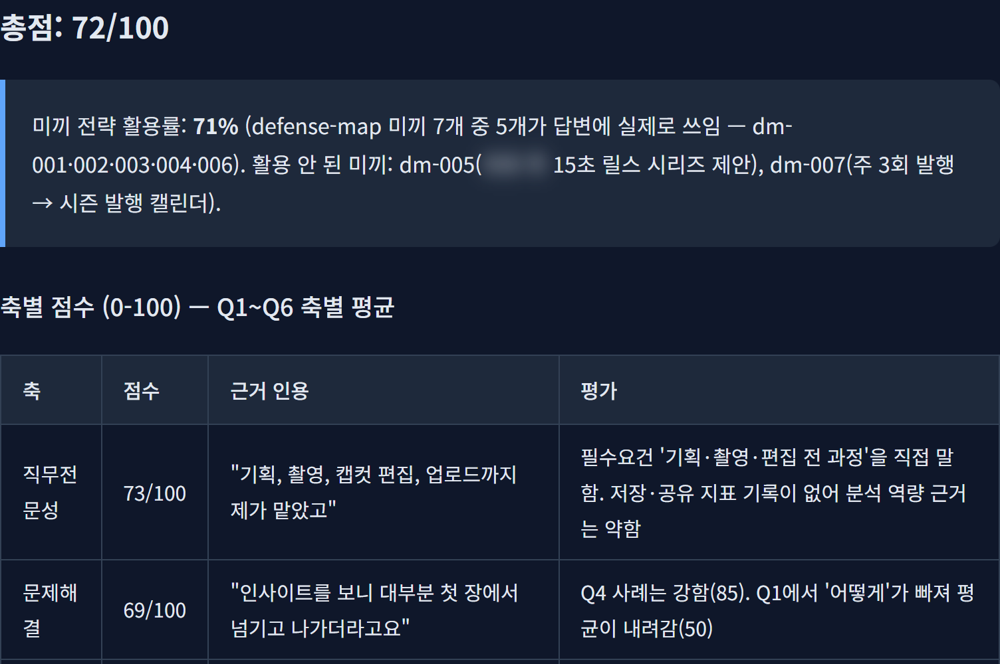
Claude Code를 열고 아래 '설치' 두 줄을 한 줄씩 입력하세요. 플러그인으로 깔면 명령 앞에 jobstack: 이 붙어요(예: /jobstack:auto). 처음 실행할 때 스크립트 실행 허락을 물으면 허락하세요 — 스킬이 오늘 날짜·내 프로필을 읽는 작은 스크립트예요.
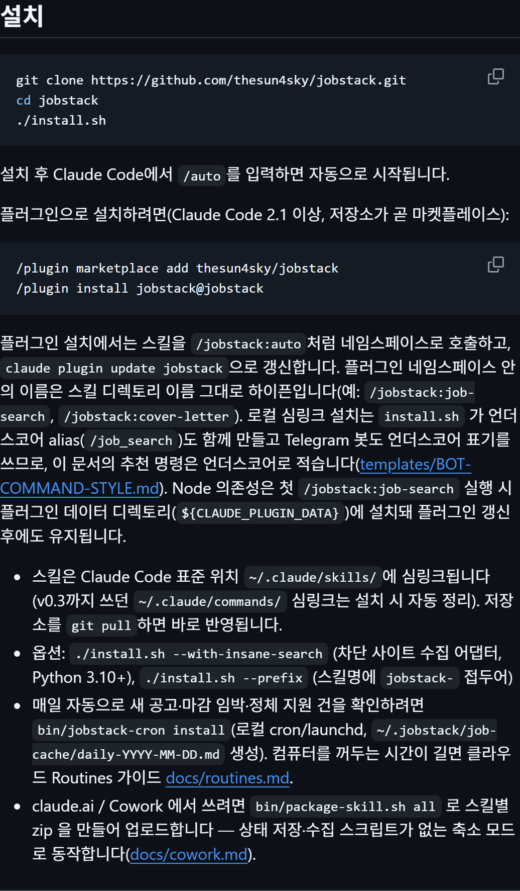
새 폴더를 하나 만들고 이력서·자소서(있으면)·공고를 넣은 뒤, 그 폴더에서 Claude Code를 여세요. 무엇부터 할지 모르겠으면 /jobstack:auto — 폴더 안 파일을 보고 다음 단계를 추천해요. 단계별로는: 공고 찾기 /jobstack:job-search, 회사 분석 /jobstack:company-research, 자소서 /jobstack:cover-letter, 면접 /jobstack:mock-interview. 명령 뒤에 직무·회사·파일 이름을 같이 적으면 덜 물어봐요('복사해서 쓰기'의 빈칸 틀). 아래는 이력서·자소서·공고 파일을 둔 폴더에서 /jobstack:auto를 친 실제 화면이에요 — 한 단계씩 거친 기록을 보고 남은 단계와 공고 상태, 지금 서류의 문제 3가지를 짚어 줘요.
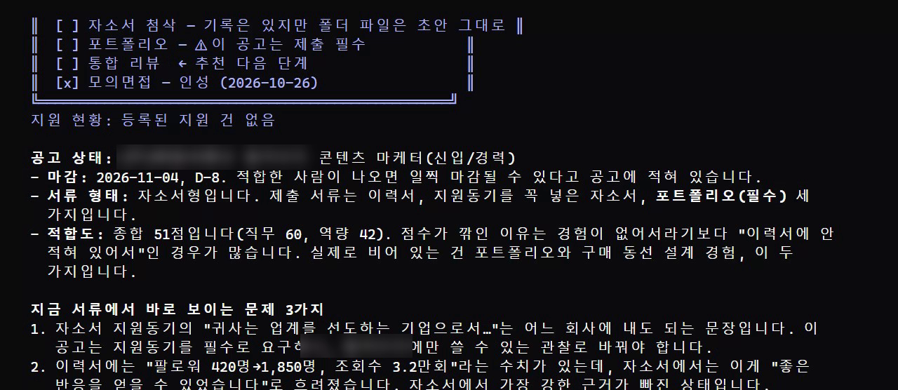
모든 결과는 폴더에 .md 파일로 저장돼요. 공고 찾기 → '한눈에 보기' 표(매칭 %, 마감 D-day)와 마감 순 캘린더. 회사 분석 → 키워드 체크리스트(내 경험과 O·모호·X)와 적합도 점수, 지원 판단. 자소서 → 7가지 진단, 첨삭본(확인 안 된 숫자는 [수치 확인 필요] 빈칸), 맨 끝 '확인할 질문'. 면접 → 총점 100점과 6가지 점수, 질문별로 고친 답, 면접 전 확인할 것. 'jobstack-view 파일이름.md'로 열면 보기 좋은 화면과 PDF 저장 버튼이 나와요.
이 부분은 저희가 다시 돌려 보지 않았고 스킬 설명서에 적힌 동작이에요. 자소서: 맨 끝 질문에 답하고 고친 자소서를 다시 넣으면, 지난번 지적 중 해결된 것·남은 것·새로 생긴 것만 짧게 보여 줘요. 면접: 같은 회사·같은 세기로 다시 보면 지난번 점수와 나란히 비교하고, 이번에 안 나온 '캐물을 문장'부터 물어요. 세기는 순한맛·보통·매운맛 중에 골라요.
쓰기 좋은 때: 서류 마감 전 자소서 점검, 지원할 공고 고르기, 서류 붙고 면접 전 연습, AI역량검사 앞두고 답 길이(60초·200자) 감 잡기, 공기업 NCS 자소서. 안 맞는 때: 해외 취업(한국 사이트·한국 자소서 기준), 실제 AI역량검사 게임 문제 연습(안내만 해요), 경험이 아예 없는 칸을 채워 달라는 경우(지어내지 않아요).
시연용 지원자 김하늘(콘텐츠 마케터 신입, 서울, 카페 인스타 운영 경험)의 이력서를 넣고 '/jobstack:job-search 콘텐츠 마케터 신입, 서울'. 원티드 8건(전부 마감 여부 확인 통과)·잡코리아·사람인에서 모아 마감 순 캘린더와 매칭 점수를 냈어요. 점핏은 개발 공고 위주라 0건이었어요. 본문을 못 읽은 공고는 점수 대신 '매칭 미산출'로 남겨요.
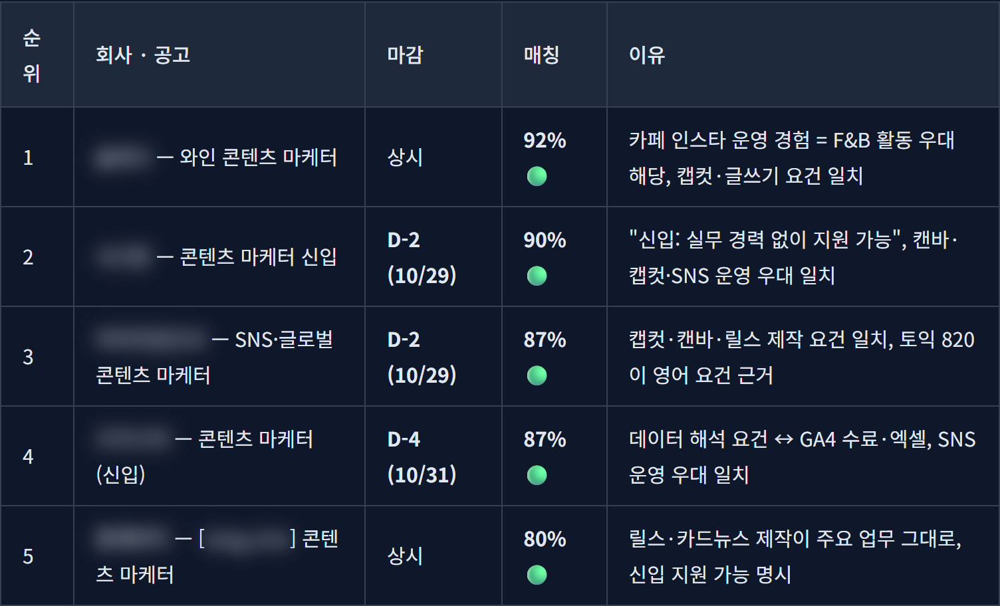
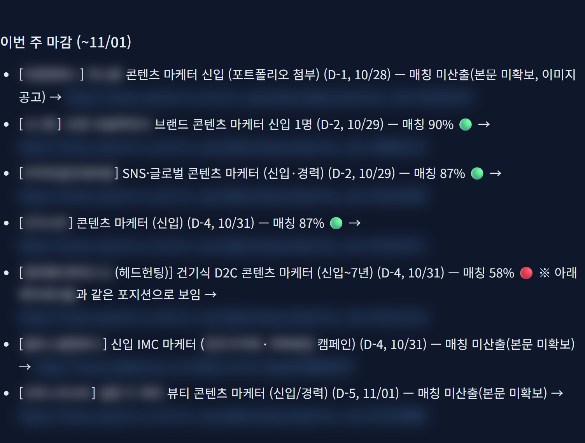
그중 시연 공고 A(콘텐츠 마케터, 사람인)로 '/jobstack:company-research'. 채용공고·대표 메시지·직무 설명·비전·회사 소개·최근 기사에서 낱말 24개를 뽑아 김하늘 이력서와 맞춰 봤어요(O 4 · 모호 12 · X 8). 인재상 페이지는 찾지 못해 '출처 미확보'로 빼고 점수에 넣지 않았어요. 적합도와 지원 판단도 나와요.
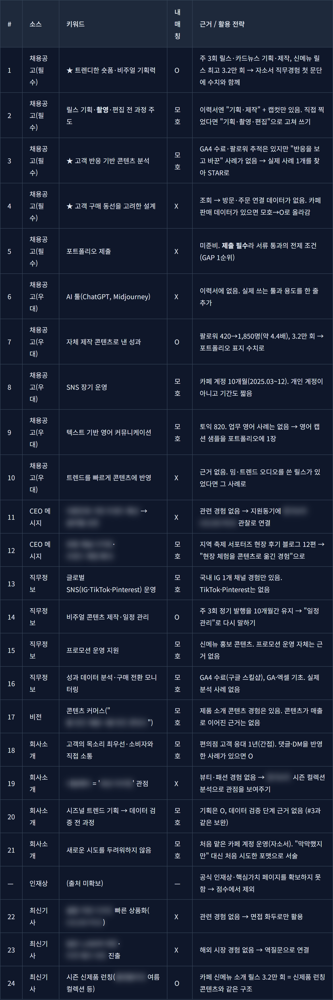
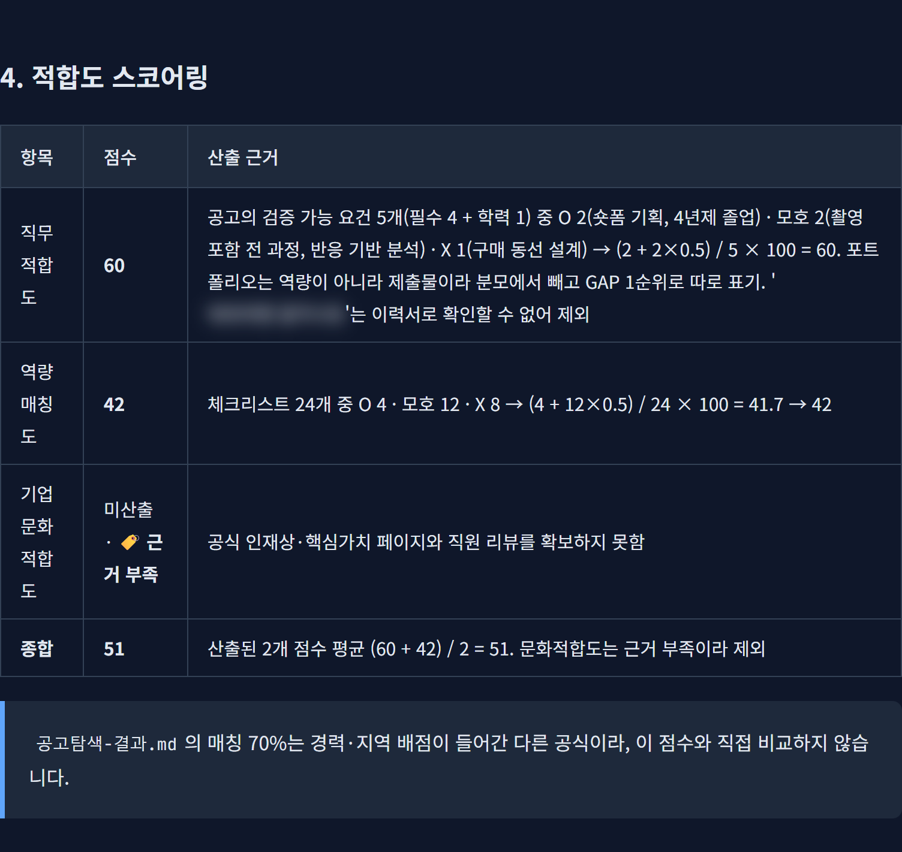
시연용 자소서('흥미를 느꼈고', '열심히 노력한 결과 좋은 반응' 같은 문장)를 '/jobstack:cover-letter'로 넣었어요. 7가지 중 6가지가 걸렸고(통과 1/7), 회사 낱말 반영은 12/20. 첨삭본은 이력서에 있는 숫자(팔로워 420→1,850명, 조회수 3.2만 회)만 쓰고, 없는 숫자는 [수치 확인 필요]로 비워 두고 끝에 나에게 확인할 질문 20개를 남겼어요.
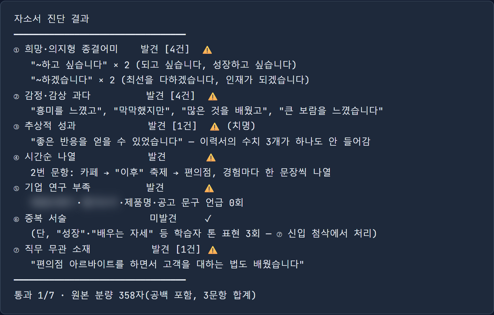
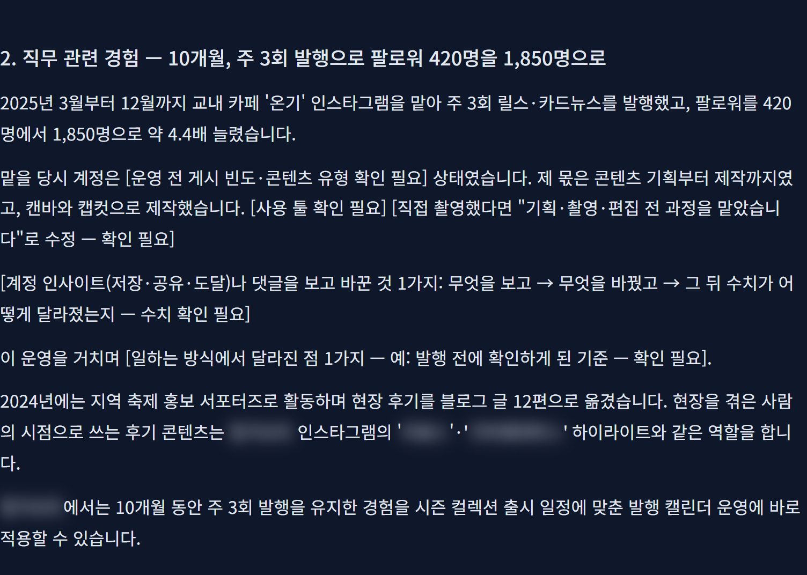
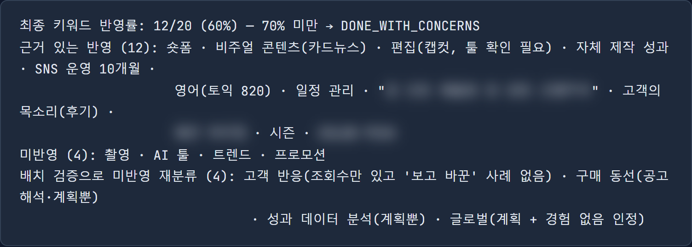
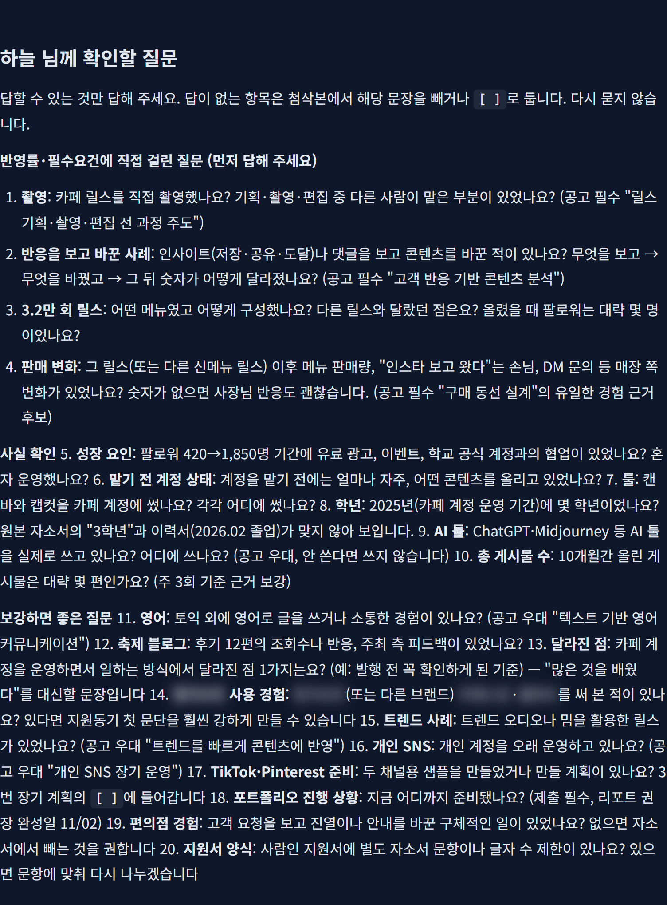
'/jobstack:mock-interview (회사) (직무) 인성면접, 강도 보통'으로 시연 공고 A를 넣었어요. 질문이 하나씩 나오고, 답하면 점수·고칠 점을 준 뒤 다음 질문을 내요. Q3 '그 릴스는 다른 릴스와 무엇이 달랐나요?'는 자소서 첨삭 때 골라 둔 '캐물을 문장'(조회수 3.2만 회)에서 나온 질문이에요. 6문항 + 역질문 1개를 마치니 총점 72/100과 면접 전에 확인할 것 3가지가 나왔어요.
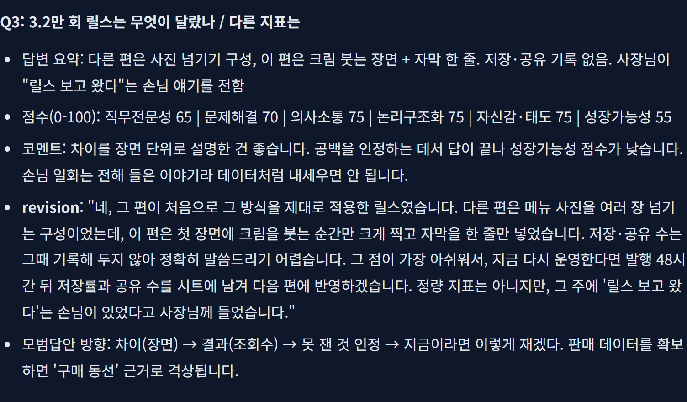
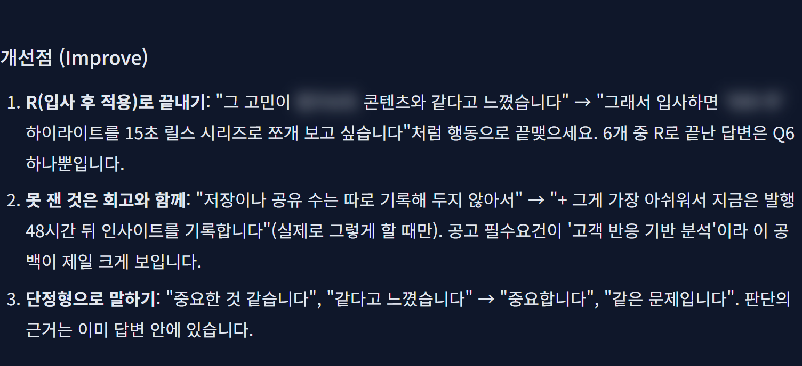
같은 회사로 'AI역량검사 대비 모드'를 열면 영상 응답 → 성향검사 → 상황판단 → 심층 구조화 순서로, 문항마다 준비 30초·답변 60초(말로 약 200음절, 글로 약 200자) 제한을 걸고 시작해요. 게임형 검사는 대비 방법 안내만 해요.
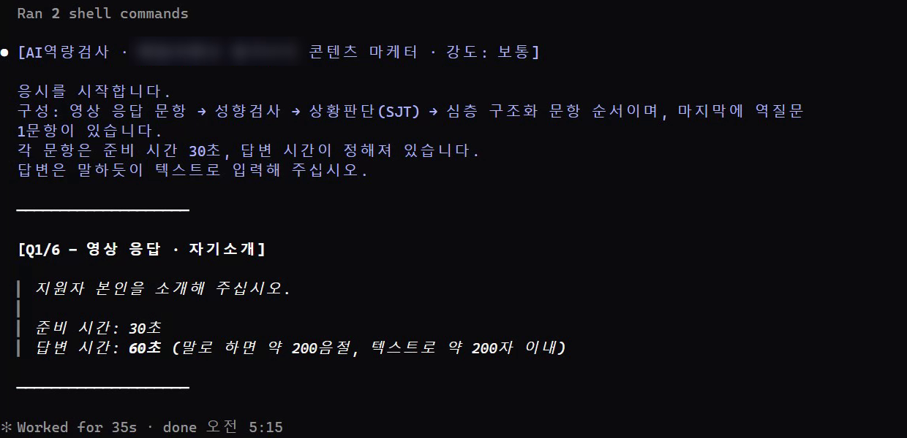
Claude Code 안에서 한 줄씩
/plugin marketplace add thesun4sky/jobstack /plugin install jobstack@jobstack
서류를 넣은 폴더에서
/jobstack:auto
괄호를 내 조건으로
/jobstack:job-search (직무) (신입/경력 N년), (지역). 내 이력서는 (파일 이름)이야.
공고 주소를 같이
/jobstack:company-research (회사) (직무) — 공고: (공고 주소). 내 이력서는 (파일 이름).
회사 분석 다음에
/jobstack:cover-letter (자소서 파일) (회사) 첨삭 — 지원 공고는 (공고 이름), 나는 (신입/중고신입/경력)이야. 확인이 필요한 숫자는 지어내지 말고 물어봐 줘.
모드: 인성·PT·토론·AI역량검사·기술·임원·컬처핏
/jobstack:mock-interview (회사) (직무) (모드), 강도는 (순한맛/보통/매운맛).
결과 .md 파일
jobstack-view (결과 파일).md
도움이 되셨다면
@ai.antenna.kr
에서 바로 쓰는 AI 활용법을 계속 올립니다.